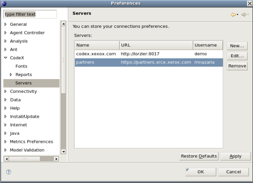

This document is licensed under the Codex Component Software License
Xerox ®, The Document Company ®, and all Xerox products mentioned in this publication are trademarks of Xerox Corporation.
This document was formatted with the DocBook XML DTD. HTML version rendered with DocBook HTML native renderer. PDF version rendered with Apache FOP.
Copyright © 2007 The Document Company - Xerox. All rights reserved.
Table des matières
- 1. Installation
- 2. Prise en main rapide
- 3. Serveurs
- 4. Liste des Artéfacts
- 4.1. Introduction
- 4.2. Parcourir la liste des artéfacts
- 4.2.1. Filtrer les artéfacts
- 4.2.2. Liste des artéfacts
- 4.2.3. Pagination de la liste des artéfacts
- 5. Détails des artéfact
- 5.1. Introduction
- 5.2. Onglets des détail d'un artéfact
- 5.2.1. Onglet Détails
- 5.2.2. Onglet Suivis
- 5.2.3. Onglet Liste des CC
- 5.2.4. Onglet Dépendances
- 5.2.5. Onglet Historique
- 6. Préférences
Le plugin Eclipse a été développé pour la version 3.2 d'Eclipse et nécessite le JRE 1.5
Le plugin Eclipse peut être installé et mis à jour grâce au mécanisme du siteupdate. Le site update du plugin CodeX est : [YOUR_CODEX_SERVER]/downloads/eclipse
Pour installer le plugin CodeX avec le mécanisme "update site" d'Eclipse, veuillez suivre les instructions ci-dessous:
Dans le menu principal d'Eclipse, sélectionnez Help > Software Update > Find and install...
Cochez la case Search for new features to install, puis cliquez sur Next
Pressez le bouton New Remote Site...
Remplissez la boîte de dialogue avec :
Name: CodeX (par exemple)
URL: [YOUR_CODEX_SERVER]/downloads/eclipse
Cochez la case CodeX (vous pouvez déplier pour voir le détails de la feature), puis cliquez sur OK
Eclipse vous demandera ensuite d'accepter la licence. Si vous acceptez la licence, cochez "I accept the terms in the license agreement".
Cliquez sur le bouton Finish
Eclipse vous demande de confirmer les feature à installer. Cliquez sur le bouton Install.
Eclipse va télécharger les features et peut avoir besoin de redémarrer pour terminer l'installation
Profitez de CodeX !
Table des matières
Ce plugin vous permet de parcourir vos artéfacts CodeX dans l'environnement Eclipse. Si vous ne savez pas ce qu'est CodeX, vous pouvez visiter notre site web http://codex.xrce.xerox.com.
 |
Pour connecter un serveur CodeX, ouvrir la perspective CodeX et
cliquer sur l'icone "Ajouter un nouveau serveur" de la vue CodeX
,
puis remplir le formulaire de configuration:
Nom : le nom du serveur tel qu'il apparaîtra dans l'interface d'Eclipse
URL : l'URL du serveur CodeX (e.g: http://codex.xerox.com)
Nom d'utilisateur : votre nom d'utilisateur CodeX
Mot de passe : votre mot de passe CodeX (Attention : si vous renseignez votre mot de passe, il sera stocké sur votre ordinateur. Si vous ne le souhaitez pas, il vous suffit de laisser ce champ vide, et votre mot de passe vous sera demandé lors de la connexion au serveur CodeX)
appliquer les modifications,
puis cliquer sur le boutton OK.
Le serveur CodeX est maintenant stocké dans les préférences Eclipse. Vous pouvez dès lors parcourir vos projets et vos outils de suivi (Voir Section 2.3).
Une fois que le serveur CodeX est configuré et connecté, il doit apparaître dans la vue "CodeX".
Vous pouvez alors parcourir les projets dont vouys êtes membre, et pour chaque projet, visualiser ses outils de suivi.
 |
Table des matières
Le plugin CodeX Eclipse vous permet de travailler sur plusieurs serveur CodeX en même temps. Les serveurs CodeX et leurs configurations sont stockés dans les préférences Eclipse.
Les serveurs CodeX sont affichés dans la vue "CodeX". Si la vue CodeX n'est pas ouverte, vous pouvez l'ouvrir en ouvrant la perspective CodeX. Pour ce faire, sélectionner Window > Open perspective > Others... et sélectionnez la perspective "CodeX".
Pour utiliser le plugin CodeX, la première chose à faire est de configurer (au moins) un serveur.
La configuration d'un serveur est stockée dans les préférences Eclipse.
Vous pouvez visualiser toutes les configurations des serveurs en
regardant les préférences du plugin CodeX (
Window >
Preferences... >
CodeX >
servers).
Il existe aussi un raccourci pour accéder directement aux préférences
des serveurs : presser le bouton "préférences"
 dans la vue "CodeX".
dans la vue "CodeX".
Pour ajouter un serveur CodeX, vous pouvez
cliquer sur l'icone "ajouter un serveur"
dans la barre d'outils de la vue "CodeX",faire un clic droit dans la vue "CodeX" et sélectionner "ajouter un serveur",
sélectionner Window > Preferences... > CodeX > serveurs ; et cliquer sur le bouton "New..."
Toutes ces actions mènent au même écran :
 |
Pour modifier un serveur, vous pouvez
effectuer un clic droit sur un serveur dans la vue CodeX et cliquer sur "Modifier un serveur",
sélectionner Window > Preferences... > CodeX > serveurs ; choisir la configuration à modifier et cliquer sur le bouton "Edit...".
Toutes ces actions mènent au même écran (le même que pour ajouter un serveur, sauf que les données sont remplies avec la configuration courante du serveur).
Après avoir effectuer des modifications, cliquer sur le bouton Appliquer pour les enregistrer. La configuration sera alors enregistrée et stockée.
Si la connexion du serveur n'est pas initialisée, le serveur
a un petit point rouge sur son icone.
 .
Pour initialiser une connexion, il suffit d'ouvrir le serveur (un clic à gauche de l'icone).
Si vous n'avez pas stocké votre mot de passe, il vous sera alors demandé.
Quand le serveur est connecté, l'icone du serveur doit avoir un point vert
.
Pour initialiser une connexion, il suffit d'ouvrir le serveur (un clic à gauche de l'icone).
Si vous n'avez pas stocké votre mot de passe, il vous sera alors demandé.
Quand le serveur est connecté, l'icone du serveur doit avoir un point vert
 ,
et vous devez voir vos projets hébergés sur ce serveur.
,
et vous devez voir vos projets hébergés sur ce serveur.
Une fois le serveur connecté, tous lesprojets dont vous êtes membre apparaissent sous le serveur.
|
Vous pouvez ouvrir chaque projet, et vous verrez tous les outils de suivi du projet.
Pour chaque outil de suivi, un double clic sur le nom de l'outil de suivi ouvrira la liste de ses artéfacts dans une autre vue Eclipse (la vue "Liste des Artéfacts", voir Chapitre 4. Liste des Artéfacts). Le rapport utilisé est le rapport par défaut. Si vous souhaitez ouvrir la liste des artéfacts avec un autre rapport, il vous suffit d'effectuer un clic droit sur l'outil de suivi et de sélectionner "Ouvrir la liste des artéfacts avec le rapport ..." puis de sélectionner le rapport désiré. Vous pouvez ouvrir plusieurs outils de suivi en même temps.
En survolant le nom de l'outil de suivi, le nombre d'artéfacts ouverts et le nombre total d'artéfacts sont affichés si vous avez les droits de les voir.
Vous pouvez également accéder à l'administration d'un outil de suivi. Pour ce faire, il faut effectuer un clic droit sur le nom d'un outil de suivi et sélectionner "Administration du tracker". Cela aura pour effet d'ouvrir le navigateur interne d'Eclipse sur la page d'administration de l'outil de suivi.
Table des matières
- 4.1. Introduction
- 4.2. Parcourir la liste des artéfacts
- 4.2.1. Filtrer les artéfacts
- 4.2.2. Liste des artéfacts
- 4.2.3. Pagination de la liste des artéfacts
La liste des artéfacts est affichée dans la vue "Liste des artéfacts". En double-cliquant sur un outil de suivi dans la vue "CodeX", cette vue s'ouvre automatiquement. Si ce n'est pas le cas, vous pouvez l'ouvrir en sélectionnant dans le menu principal d'Eclipse Window > Show view > CodeX > Liste des artéfacts.
Vous pouvez ouvrir plusieurs outils de suivi en même temps.
 |
La vue "Liste des artéfacts" est composée de 3 parties :
le filtre des rapports, qui vous permet de construire une requête pour filtrer les artéfacts (partie haute de la vue)
la liste des artéfacts (il y a une pagination)
la partie de contrôle en bas de la vue qui vous permet d'avancer dans les résultats de la requête.
Pour changer de rapport :
sélectionnez le menu de la vue,
sélectionnez "Choisir un rapport...",
puis sélectionnez le rapport désiré.
Cela aura pour effet d'afficher la liste avec le rapport sélectionné.
Le filtre vous permet de construire une requête en donnant des critères aux champs des artéfacts. Les champs utilisés dans les filtres sont les champs définis dans l'administration des outils de suivi de CodeX.
Pour lancer la requête, pressez le boutton "Chercher". Cela va rafraichir la liste des artéfacts (le nombre d'artéfacts qui répondent à la requête est affiché dans la partie "pagination" de cette vue).
Le nombre d'artéfacts affichés par page peut être paramétré. Pour le modifier, entrez le nombre souhaité dans la boîte "Afficher ** artéfacts à la fois".
Modifier la valeur de la paginationLa valeur par défaut est enregistrée dans les préférences du plugin. Pour la changer, sélectionnez Window > Preferences... > CodeX > rapport. Attention à ne pas mettre une valeur trop élevée. Cela pourrait rendre l'utilisation du plugin vraiment lente. |
La liste des artéfacts est affichée avec la couleur de leur sévérité. Vous pouvez également modifier la couleur des sévérité dans les préférences du plugin.
Le tri des artéfacts est activé uniquement si tous les artéfacts sont affichés sur la même page. Pour trier la liste selon un champ, il vous suffit de cliquer sur la colonne du champ en question.
Pour afficher un artéfact, double cliquez sur l'artéfact dans la liste. Le détail de l'artéfact s'affichera dans une troisième vue nommée "Détails de l'artéfact" (voir Chapitre 5. Détails des artéfact pour plus de détails).
La partie pagination vous donne des informations à propos de la page courante : le nombre d'artéfacts affichés sur le nombre le nombre total d'artéfacts. Par exemple : <code>items 21 - 40 / 60</code> signifie que vous visualisez sur la page courante 20 artéfacts, de la position 21 à la position 40 dans la liste, et qu'il y a en tout 60 artéfacts qui répondent à la requête.
Pour visualiser la page suivante (si elle existe) cliquez sur le bouton "suivant". Le bouton "précédent" vous amènera à la page précédente. Les boutons "Début" et "Fin" vous afficheront respectivement la première page et la dernière page des résultats.
Table des matières
- 5.1. Introduction
- 5.2. Onglets des détail d'un artéfact
- 5.2.1. Onglet Détails
- 5.2.2. Onglet Suivis
- 5.2.3. Onglet Liste des CC
- 5.2.4. Onglet Dépendances
- 5.2.5. Onglet Historique
 |
La vue "Détail des artéfacts" est la vue qui vous permet de voir le détail d'un artéfact, de le modifier et d'en créer de nouveaux. Cette vue vous permet d'ouvrir plusieurs artéfacts en même temps.
Le détail d'un artéfact est composé de plusieurs onglets. Chaque onglet correspond à une section dans l'interface de CodeX.
Pour valider les modifications, cliquez sur le bouton "Soumettre les changements". Dans le cas d'un nouvel artéfact, le bouton pour le soumettre est "Créer un artéfact". Pour annuler les changements et revenir aux valeurs de l'artéfact, cliquez sur le bouton "Annuler".
Aucune modification ne sera réellement enregistrée avant d'avoir validé en pressant le bouton "Soumettre". L'appui sur le bouton envoie les modifications au serveur CodeX, comme vous le feriez dans votre navigateur web.
 |
Dans cet onglet sont affichés tous les champs de l'artéfact. Ils sont regroupés en groupe de champs (fieldset) que vous pouvez plier et déplier.
 |
Dans cet onglet, vous trouverez les commentaires et les fichiers attachés de l'artéfact.
Le champ "Détails" de l'artéfact est ré-affiché dans cet onglet pour mémoire.
Vous pouvez ensuite écrire un nouveau commentaire.
Les commentaires existants sont affichés juste en dessous.
On trouve ensuite la section des fichiers attachés.
Pour ajouter un nouveau fichier attaché, cliquez sur le bouton
"Ajouter un fichier attaché", et sélectionnez le fichier
sur votre disque.
La liste des fichiers attachés de l'artéfact sont affichés
en dessous. Pour télécharger un fichier, double-cliquez sur
le nom du fichier. Une fenêtre vous demandera alors
l'emplacement pour sauvegarder le fichier.
Pour supprimer un fichier attaché, cliquez sur l'icone de la poubelle
 (le fichier ne sera pas réellement supprimé tant que vous ne soumettrez pas les modifications).
(le fichier ne sera pas réellement supprimé tant que vous ne soumettrez pas les modifications).
 |
Dans cet onglet, vous pouvez visualiser la liste des CC de l'artéfact, et en ajouter de nouveaux.
Pour ajouter une CC, pressez le bouton "Ajouter une nouvelle adresse en CC", puis remplissez les champs.
Pour supprimer une CC existante, pressez l'icone de la poubelle
 (la CC ne sera pas supprimée tant que vous ne validerez pas les modifications).
(la CC ne sera pas supprimée tant que vous ne validerez pas les modifications).
 |
Dans cet onglet, vous pouvez visualiser les dépendances entre artéfacts.
Pour créer une nouvelle dépendance avec l'artéfact courant, cliquez sur le bouton "Ajouter une dépendance", et rentrez un ou plusieurs identifiants d'artéfacts (séparés par une virgule) et cliquez sur OK. Les dépendances entre artéfacts apparaissent dans la table juste dessous, avec leur description, l'outil de suivi et le projet auxquels ils appartiennent.
Pour supprimer une dépendance, il vous suffit de cliquer
sur la poubelle
 à droite de la description de l'artéfact (la dépendance ne sera pas supprimée tant que vous ne validerez pas les modifications).
à droite de la description de l'artéfact (la dépendance ne sera pas supprimée tant que vous ne validerez pas les modifications).
La section des dépendances vous montre les dépendances dans les deux sens : vous voyez la liste des artéfacts dont l'artéfact courant dépend, ainsi que la liste des artéfacts qui dépendent de l'artéfact courant.
 |
Le dernier onglet vous montre l'historique de l'artéfact. L'historique de l'artéfact garde la trace de toute modification d'un champ de l'artéfact.
L'historique de l'artéfact vous affiche le nom du champ modifié, l'ancienne et la nouvelle valeur de ce champ, le nom de l'utilisateur qui a effectué la modification, ainsi que l'heure de la modification.
Ces données ne sont pas éditables.
Table des matières
Les préférences du plugin CodeX sont enregistrées dans les préférences Eclipse. Pour les atteindre, sélectionnez dans le menu principal d'Eclipse Window > Preferences... > CodeX.
 |
Cette section est la partie gestion des serveurs CodeX. Toutes les configurations existantes sont affichées dans la table. Pour chaque configuration, vous pouvez l'éditer ou la supprimer. Pour ajouter une nouvelle configuration, pressez le bouton "Nouveau...".
|  |
Pour plus de détail, voir Section 3.2
Ces préférences concernent les rapports (liste d'artéfacts, résultats des requêtes).
Vous pouvez changer le nombre par défaut d'artéfacts affichés par page dans la vue "Liste des artéfacts". Attention à ne pas donner un nombre trop élevé, pour des raisons de performance. Le nombre par défaut est 50. En cliquant sur "Restaurer les valeurs par défaut", vous reviendrez à cette valeur.
Dans la liste des artéfacts, les artéfacts sont affichés avec une couleur qui dépend de leur sévérité. Les couleurs par défaut sont les mêmes que celles de Codex. Vous pouvez toutefois les redéfinir pour chaque valeur de sévérité, ou revenir aux valeurs par défaut en cliquant sur "Restaurer les valeurs par défaut".
|